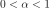
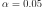

DickeyFullerTest¶
- class DickeyFullerTest(*args)¶
The Dickey-Fuller stationarity test.
Refer to Dickey-Fuller stationarity test.
Notes
The Dickey-Fuller test checks the stationarity of a scalar time series using one time series.
Examples
Create an ARMA process and generate a time series:
>>> import openturns as ot >>> arcoefficients = ot.ARMACoefficients([0.3]) >>> macoefficients = ot.ARMACoefficients(0) >>> timeGrid = ot.RegularGrid(0.0, 0.1, 10) >>> whiteNoise = ot.WhiteNoise(ot.Normal(), timeGrid) >>> myARMA = ot.ARMA(arcoefficients, macoefficients, whiteNoise)
>>> realization = ot.TimeSeries(myARMA.getRealization()) >>> test = ot.DickeyFullerTest(realization)
Test the stationarity of the data without any asumption on the model:
>>> globalRes = test.runStrategy()
Test the stationarity knowing you have a drift and linear trend model:
>>> res1 = test.testUnitRootInDriftAndLinearTrendModel(0.95)
Test the stationarity knowing you have a drift model:
>>> res2 = test.testUnitRootInDriftModel(0.95)
Test the stationarity knowing you have an AR1 model:
>>> res3 = test.testUnitRootInAR1Model(0.95)
Methods
Accessor to the object's name.
getId()Accessor to the object's id.
getName()Accessor to the object's name.
Accessor to the object's shadowed id.
Accessor to the object's visibility state.
hasName()Test if the object is named.
Test if the object has a distinguishable name.
runStrategy([level])Test the stationarity without any assumption on the model.
setName(name)Accessor to the object's name.
setShadowedId(id)Accessor to the object's shadowed id.
setVisibility(visible)Accessor to the object's visibility state.
testNoUnitRootAndNoDriftInDriftModel([level])Test for null drift in model without unit root.
testNoUnitRootAndNoLinearTrendInDriftAndLinearTrendModel([level])Test for trend in model without unit root.
testUnitRootAndNoDriftInDriftModel([level])Test for null drift in model with unit root.
testUnitRootAndNoLinearTrendInDriftAndLinearTrendModel([level])Test for linear trend in model with unit root.
testUnitRootInAR1Model([level])Test for unit root in AR1 model.
Test for unit root in model with drift and trend.
testUnitRootInDriftModel([level])Test for unit root in model with drift.
getVerbose
setVerbose
- __init__(*args)¶
- getClassName()¶
Accessor to the object’s name.
- Returns
- class_namestr
The object class name (object.__class__.__name__).
- getId()¶
Accessor to the object’s id.
- Returns
- idint
Internal unique identifier.
- getName()¶
Accessor to the object’s name.
- Returns
- namestr
The name of the object.
- getShadowedId()¶
Accessor to the object’s shadowed id.
- Returns
- idint
Internal unique identifier.
- getVisibility()¶
Accessor to the object’s visibility state.
- Returns
- visiblebool
Visibility flag.
- hasName()¶
Test if the object is named.
- Returns
- hasNamebool
True if the name is not empty.
- hasVisibleName()¶
Test if the object has a distinguishable name.
- Returns
- hasVisibleNamebool
True if the name is not empty and not the default one.
- runStrategy(level=0.05)¶
Test the stationarity without any assumption on the model.
- Parameters
- alphafloat, 
The first kind risk of the test.
By default, .
- Returns
- testResult
TestResult Results container of the tests. The strategy if the one described above.
- testResult
- setName(name)¶
Accessor to the object’s name.
- Parameters
- namestr
The name of the object.
- setShadowedId(id)¶
Accessor to the object’s shadowed id.
- Parameters
- idint
Internal unique identifier.
- setVisibility(visible)¶
Accessor to the object’s visibility state.
- Parameters
- visiblebool
Visibility flag.
- testNoUnitRootAndNoDriftInDriftModel(level=0.05)¶
Test for null drift in model without unit root.
- Parameters
- alphafloat,
The first kind risk of the test.
By default, .
- Returns
- testResult
TestResult Results container of the test detailed in (10).
- testResult
- testNoUnitRootAndNoLinearTrendInDriftAndLinearTrendModel(level=0.05)¶
Test for trend in model without unit root.
- Parameters
- alphafloat,
The first kind risk of the test.
By default, .
- Returns
- testResult
TestResult Results container of the test detailed in (5).
- testResult
- testUnitRootAndNoDriftInDriftModel(level=0.05)¶
Test for null drift in model with unit root.
- Parameters
- alphafloat,
The first kind risk of the test.
By default, .
- Returns
- testResult
TestResult Results container of the test detailed in (11).
- testResult
- testUnitRootAndNoLinearTrendInDriftAndLinearTrendModel(level=0.05)¶
Test for linear trend in model with unit root.
- Parameters
- alphafloat,
The first kind risk of the test.
By default,
- Returns
- testResult
TestResult Results container of the test detailed in (6).
- testResult
- testUnitRootInAR1Model(level=0.05)¶
Test for unit root in AR1 model.
- Parameters
- alphafloat,
The first kind risk of the test.
By default, .
- Returns
- testResult
TestResult Results container of the test detailed in (14).
- testResult
- testUnitRootInDriftAndLinearTrendModel(level=0.05)¶
Test for unit root in model with drift and trend.
- Parameters
- alphafloat,
The first kind risk of the test.
By default, .
- Returns
- testResult
TestResult Results container of the test detailed in (4).
- testResult
- testUnitRootInDriftModel(level=0.05)¶
Test for unit root in model with drift.
- Parameters
- alphafloat,
The first kind risk of the test.
By default, .
- Returns
- testResult
TestResult Results container of the test detailed in (9).
- testResult